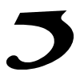

Se-
diyu.
A small mark, given presence.
An encounter with form and light.
The Cedilla
Digital sculpture / Seoul, 2026Opening the sculpture room. The original silhouette is already on view.
The quietest
part of a
name.
Under the Ş in TOHEŞAR, a small curve makes the name its own. Se-diyu carries that curve into space. The same silhouette; a new way to encounter it.
이름의 가장 작은 부분에서 시작된 독립적인 형상. 확정된 세디유의 고유한 실루엣을 그대로 간직하고, 금속의 표면과 빛, 공간의 깊이를 통해 새로운 존재감을 만듭니다.
Independent signature
A precise gesture.
The original outline holds its identity. A fine inward bevel lets the edge catch light without changing the mark.
Light, held in metal.
Fine brushing and restrained reflections bring the surface into focus. Three material studies reveal different moods of the same form.
A room to look.
A stone plinth, an open sky, and measured architectural shadows. Nothing moves until you choose a point of view.